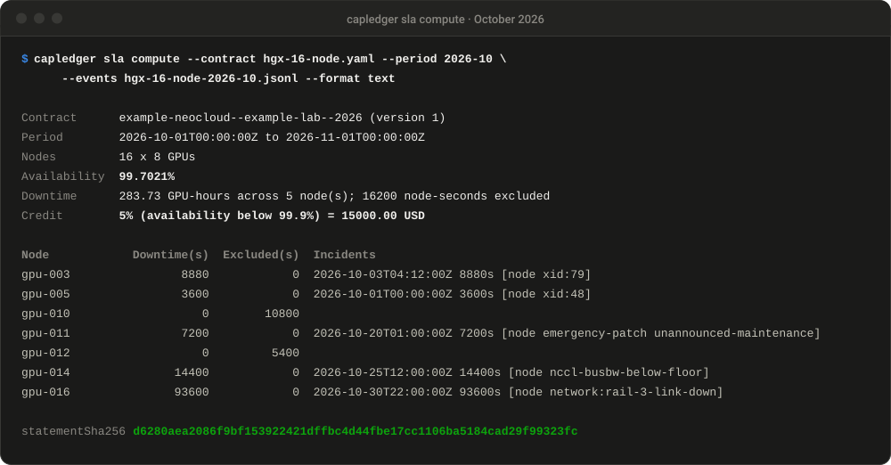
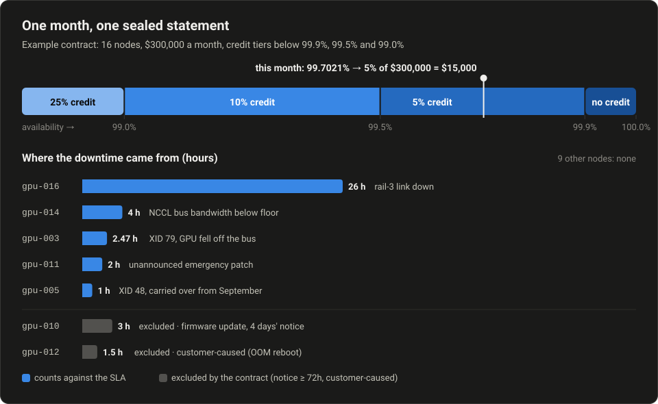
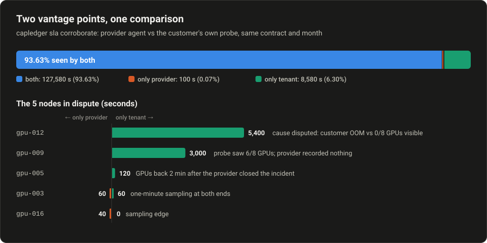
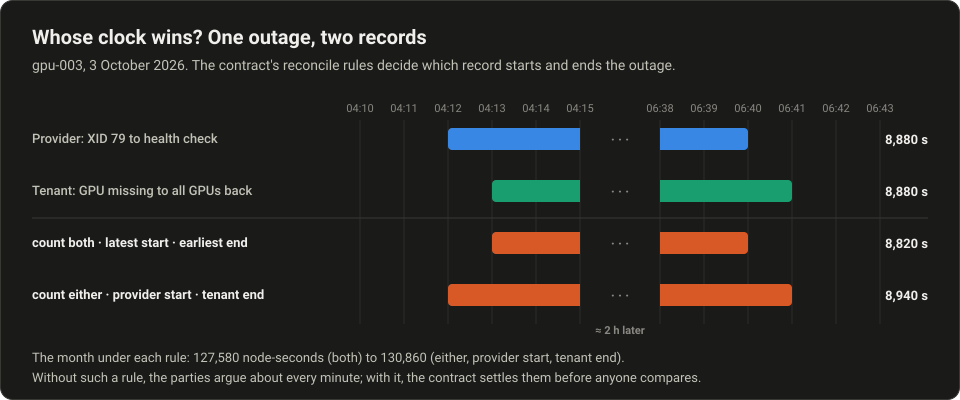
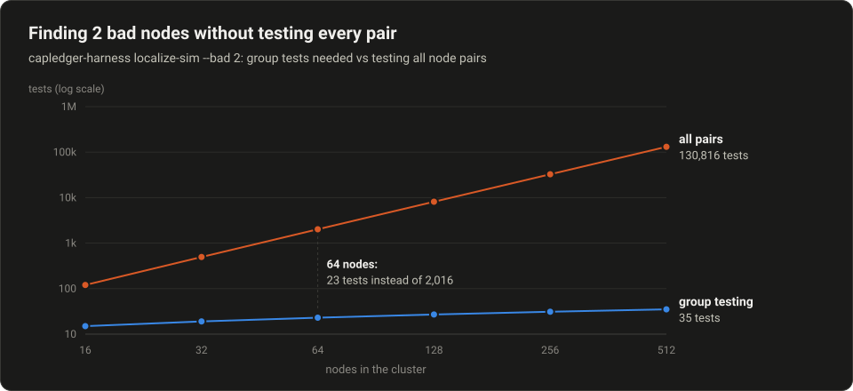

One signed record of what a GPU cluster actually delivered.
GPU Sentinel turns kernel logs, health checks and benchmark runs into signed, hash-chained evidence. The provider and the customer replay the same contract against the same events and get the same statement, down to the hash.
examples/contracts/hgx-16-node.yaml
What you get
| Moment | What you get | Who checks it |
|---|---|---|
| At handover | A signed acceptance bundle: the test plan, raw results and per-node verdicts, under one signature | The customer, before the first invoice |
| Every month | A sealed SLA statement either party can recompute from the same events and get the same hash | Customer, insurer or lender, without trusting a dashboard |
| When views differ | A corroboration report comparing both records node by node, plus contract rules for whose clock counts | Both parties, before anyone argues about credits |
| All month long | A shared ledger both parties push signed logs to, witnessed daily and co-signed monthly | Both parties, and financiers once both consent |
Why this exists
-
77 clouds tested, 19 passed.
SemiAnalysis's ClusterMAX 3.0 ran injected faults against 77 GPU clouds in September 2026 and gave only 19 a medallion rating. The faults it found were health checks that missed failures, or took hours to return a node.
SemiAnalysis, Sept 2026 -
Contracts are standardising. Measurement isn't.
Providers and buyers now negotiate acceptance tests, downtime definitions and credits, but each side still measures with its own scripts and dashboards, so disputes get argued from support tickets.
-
Capital wants the evidence too.
Insurers sell parametric SLA cover, and lenders are starting to require it. A parametric trigger is only as good as the measurement that feeds it.
Capacity Global, 2026 -
Passed burn-in isn't healthy.
ByteDance reports that synthetic microbenchmarks miss most GPUs with silent data corruption, which is why acceptance has to be followed by continuous, comparable evidence, not a one-time check.
USENIX OSDI '26
How it works
- 1
Collect
Agents, probes and the test harness write signed entries to per-source evidence logs. Each entry carries the hash of the one before it.
- 2
Share
Both parties push their logs to a ledger for the contract. It signs a checkpoint of every log each day, so history can't be rewritten later.
- 3
Compute
The SLA engine replays events against the contract: exclusions, per-node caps, whose clock counts. Integer seconds only, no floats in the money path.
- 4
Agree
The statement is sealed with a SHA-256 hash. Anyone with the contract and the same events gets the same hash, and each party signs it.
Up, or not up yet
The tenant probe only opens an incident after repeated failures, and only closes it after repeated recoveries, so one slow check never becomes downtime.
- 1
Up
GPUs visible, checks passing.
- 2
Suspect
One check failed. Not logged as down yet.
- 3
Down
Third failure in a row: a signed down event.
- 4
Recovering
Passing again, but not trusted yet.
See it on example data
Every number below comes from the repository's own example contract and events. Reproduce any of it with the commands under Quickstart.


Two vantage points
The customer runs its own probe and keeps its own signed log. Lining the two records up shows exactly where they differ, node by node, instead of a month of support tickets.

Whose clock wins?
The provider's agent can see a fault a minute before the customer's job does, and the job can see the GPUs come back a minute after the provider's next health check. Both records are correct. The contract settles which one counts before anyone compares them:
measurement:
reconcile:
count: either # an outage counts if either party recorded it
start: provider # starts at the provider's first fault record
end: tenant # ends when the tenant's jobs see the node again
Finding bad nodes fast
When a 64-node all-reduce misses its floor, the harness finds the bad nodes by splitting the group in half and recursing, instead of testing every pair.

What's inside
| Component | Language | What it does |
|---|---|---|
| capledger sla | Go | Contract + events → a sealed, independently replayable SLA statement |
| capledger evidence | Go | Ed25519-signed, hash-chained logs with per-node keys and heartbeat gap detection |
| capledger ledger | Go, stdlib | Hosted ledger: verified pushes, witness checkpoints, co-signing, a consented financier feed |
| capledger agent | Go, stdlib | Kernel log → NVIDIA XID / AMD amdgpu observations, GPU count, heartbeats |
| capledger probe | Go, stdlib | The customer's own side: GPU visibility and a benchmark floor, its own signed log |
| capledger watch kubernetes | Go, stdlib | Node health (Ready, NVSentinel, taints, allocatable GPUs) → signed events |
| capledger-harness | Python | Acceptance plan, run and report; group-testing fault localisation |
Quickstart
Go 1.22+ and Python 3.10+. The Go code has no third-party dependencies.
# clone and build
git clone https://github.com/Sievehouse/gpu-sentinel.git && cd gpu-sentinel
make build # bin/capledger
# acceptance harness
python3 -m venv .venv && . .venv/bin/activate
pip install -e "harness[dev]"
# verify and run the end-to-end demo
make test
./scripts/demo.shStatus
v0.1 — Oct 2026
SLA engine with sealed, replayable statements. Signed, hash-chained evidence logs. NVIDIA XID agent, Slurm watcher, acceptance harness.
v0.2 — Oct 2026
Heartbeats and unmonitored time. Tenant probe and corroboration. AMD Instinct support, signed bundles, keyrings.
v0.3 — Oct 2026
Hosted ledger with provider, customer and financier roles. Co-signed statements, witness checkpoints, reconcile rules.
v0.4 — Nov 2026
Kubernetes and NVSentinel node watcher. Redaction. One ledger for several contracts. Windows demo and CI.
Next
The technical proof on rented clusters, before more features.